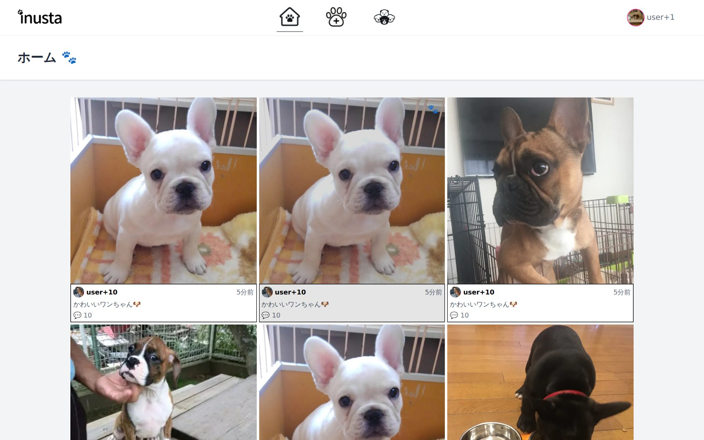
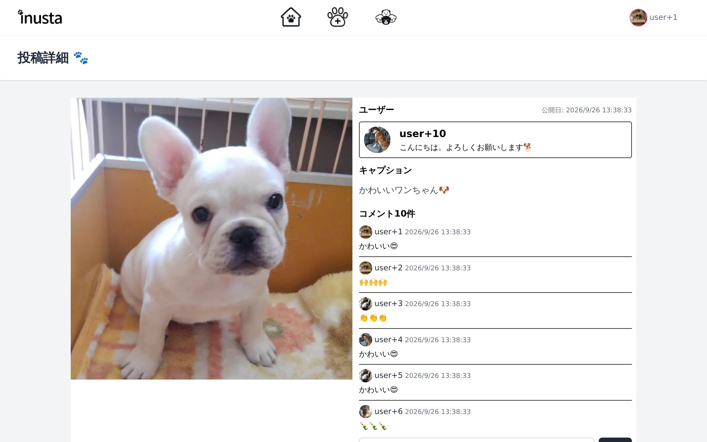
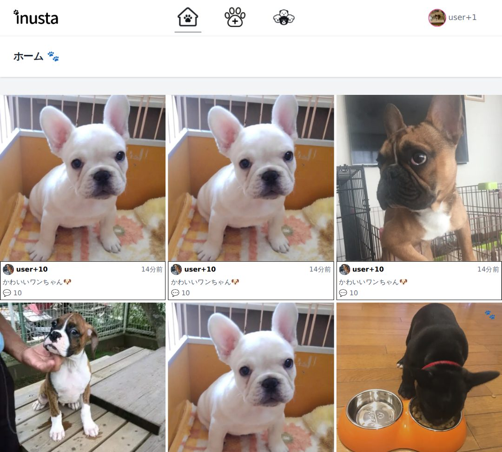
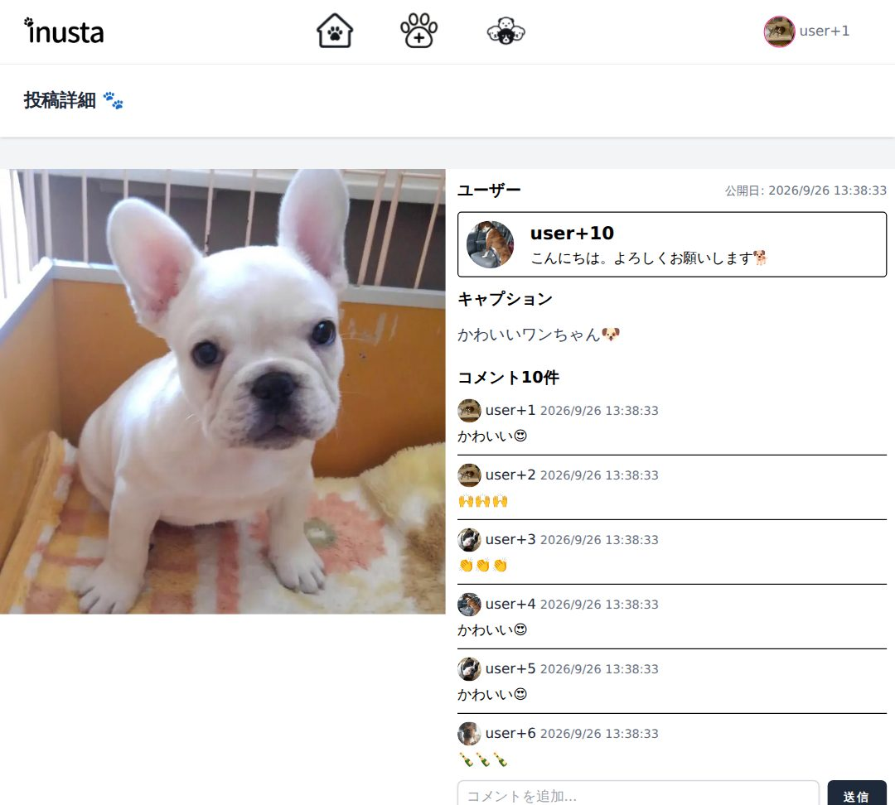
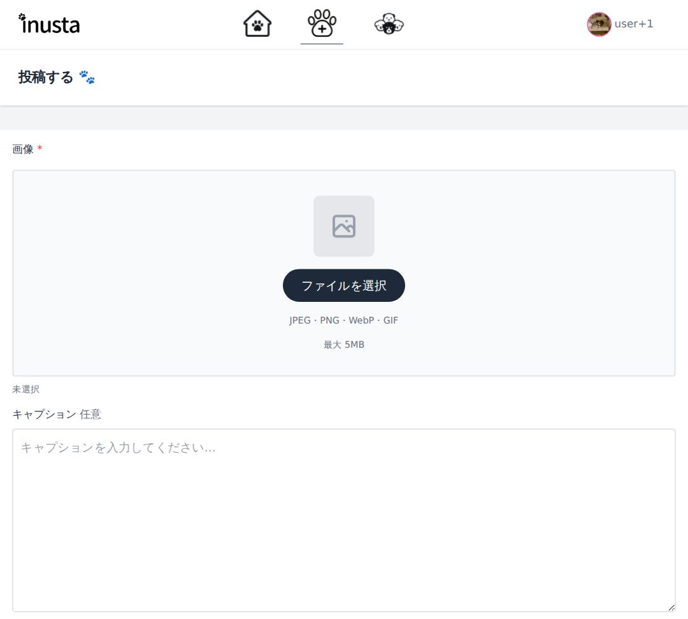
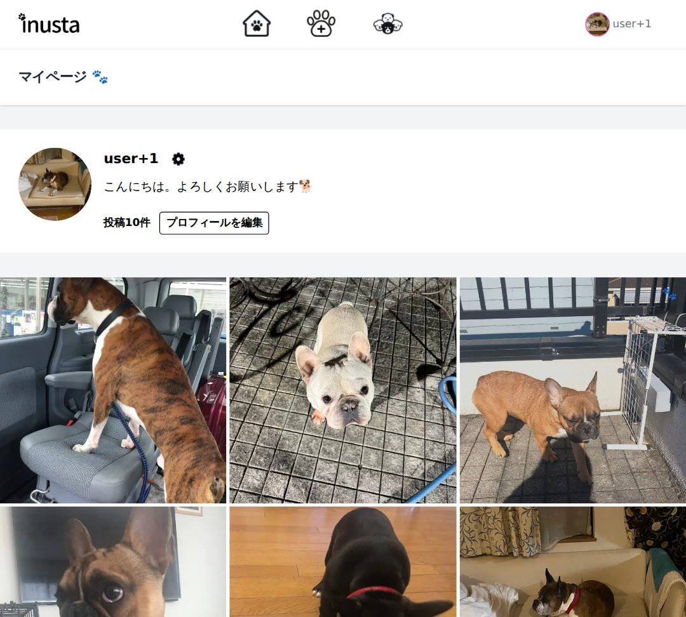

フロントエンドとバックエンドの経験を生かし、要件整理から認証・データ設計・デプロイまで一貫して実装します。


inustaは、認証・投稿・コメント・画像保存を備えたフルスタックのSNSです。この1作品で示せる力を整理しました。
Auth.jsのCredentials認証とMiddlewareでのルート保護。更新・削除はサーバー側で所有者を確認。
PrismaでUser・Post・Commentの1対多を定義。一覧・詳細・作成・編集・削除を実装。
Vercel Blobに保存し、URLをDBへ。形式・サイズをサーバー側で検証。
Tailwind CSSでレスポンシブ対応。スケルトン表示、追加読み込み、削除前の確認モーダル。
Vercelでの環境変数・DB接続・画像ドメイン設定を調整し本番公開。依存パッケージの脆弱性対応とNode.js v22への更新も実施。
未ログイン時はトップ・登録・ログインのみ。ログイン後はナビゲーションから4つの主要画面を行き来します。




APIを別サーバーに立てず、Next.js（App Router）の中でDB・ストレージ・認証までつなげています。
| 技術 | 役割 |
|---|---|
| Next.js / React | 画面とサーバー処理を1つのアプリで実装 |
| Middleware | ログイン必須ページへの未認証アクセスを遮断 |
| Server Actions | フォーム送信を受け、検証・保存・再描画まで行う |
| Zod | 登録・ログイン入力の形式を実行時に検証 |
| Auth.js / bcrypt | メール＋パスワード認証、ハッシュ照合 |
| Prisma | スキーマ定義から型付きのDB操作を生成 |
| PostgreSQL | ユーザー・投稿・コメントを保存 |
| Vercel Blob | 画像ファイルを保存し公開URLを返す |
※ 例外として、ヘッダーのユーザー表示用に Route Handler GET /api/me を1本用意しています。
3つのモデルを1対多でつなぎ、ユーザーや投稿を削除すると関連データも連鎖削除される構造にしました。
| 機能 | 主な処理 |
|---|---|
| 会員登録 | Zod検証 → メール重複確認 → bcryptでハッシュ化 → User作成 → 自動ログイン |
| ログイン | Zod検証 → Userを取得 → bcrypt.compare → セッション発行 |
| 投稿作成 | 認証 → 画像の形式・サイズ検証 → Blob保存 → Post作成 |
| 投稿編集・削除 | 投稿ID と ログインユーザーIDの両方で絞り込んで更新・削除 |
| コメント | 投稿の存在確認 → Comment作成 → 詳細ページを再検証 |
| プロフィール | name・自己紹介を更新、画像があればBlobへ差し替え |
| 新着一覧 | skip / take で20件ずつ取得、_count でコメント数を同時取得 |
画面の入口はMiddlewareで、データの書き換えはServer Actionの中で、それぞれサーバー側で確認しています。
| アクセス先 | 未ログイン | ログイン済み |
|---|---|---|
| /・/login・/register | 表示 | /dashboard へ |
| 上記以外（投稿・マイページ等） | /login へ | 表示 |
| /register/complete | 登録直後の遷移を妨げないよう常に表示 | |
編集・削除は、投稿IDだけでなくログインユーザーのIDも条件に含めてDBを操作します。画面のボタンを隠すだけでは、フォームを直接送られると防げないためです。
フォーム送信から画面更新まで、1つのServer Actionの中で「認証 → 検証 → 保存 → 再描画」を順に行います。
| 対象 | ブラウザ | サーバー |
|---|---|---|
| 投稿画像 | 形式・5MB・プレビュー | 形式・サイズ |
| 会員登録 | — | Zod：必須・形式・8文字以上・確認一致・重複 |
| ログイン | — | Zod＋bcrypt |
| コメント | — | 未入力チェック |
ブラウザ側は使いやすさのため、最終判断は必ずサーバー側で行う方針です。
Postの image は必須項目のため、先にBlobへ保存してURLを確定させてからレコードを作成します。これにより「画像のない投稿」がDBに残りません。
実装・デプロイ中に発生した課題を「課題・対応・結果」の3行で整理しました。
「なぜその方法を選んだか」を説明できるように、主な判断を残しています。
画面とサーバー処理を同じアプリ内に置けるため、APIの型定義やfetch処理を二重に書かずに済みます。読み取りは lib/apis.ts、書き込みは lib/actions.ts にまとめ、役割で分けました。
初回20件をサーバーで描画し、末尾が見えたら IntersectionObserver でServer Actionを呼んで次の20件を取得。読み込み中フラグで二重リクエストを防ぎ、IDで重複を除外して結合します。
DB取得を行うコンポーネントを Suspense で囲み、読み込み中はレイアウトに合わせたスケルトンを表示。ヘッダーやナビゲーションは先に表示されます。
投稿削除は「Danger Zone」として編集画面の下部に分離し、確認モーダルを挟んで実行。プロフィールや投稿の編集も送信前に内容を確認できるようにしました。
Prismaの select で画面ごとに取得列を指定し、パスワードハッシュなど不要な値がクライアントへ渡らないようにしています。コメント数は _count で一覧と同じクエリ内で取得。
Prismaのseedで10ユーザー・100投稿・1,000コメントを投入できるようにし、一覧・追加読み込み・詳細の表示確認を実データに近い量で行えるようにしました。
現状できていることと、まだ足りないことを分けて整理しています。
Claude Codeを「調査と実装案の作成」に使い、採用の判断は自分で行っています。
例：投稿画像が消える不具合の原因特定、ESLint循環参照エラーの解消、UI改善項目の洗い出し。